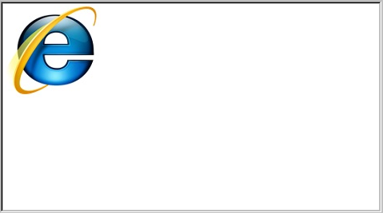
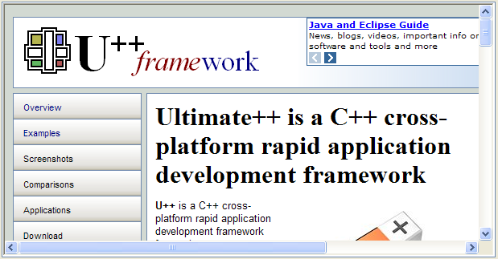

|
class InternetExplorerBrowser : public DHCtrlActiveX
As seen in layout designer:

As seen in program:

InternetExplorerBrowser is a control to render internet web pages and html code.
To run properly InternetExplorerBrowser requires to install previously Microsoft Internet Explorer.in the system.
As this control is based in DHCtrlActiveX it can only work in Windows.
InternetExplorerBrowser(bool status = true)
Initializes InternetExplorerBrowser.
bool Browse(const String &url)
Renders url web page in control.
bool ShowHTML(const String &html)
Renders html code in control.
bool GoForward()
Browses to the next item in the history list.
bool GoBack()
Browses to the previous item in the history list.
String GetLocation()
Retrieves the full URL of the document currently being viewed.
String GetTitle()
Retrieves the short, user-friendly name of the document currently being viewed.
bool GetOffline(bool &offline)
Puts in offline if object is currently operating in offline mode.
Returns true if ok.
String GetReadyState()
Gets the ready state of an object. Possible values are:
"Uninitialized":
"Loading":
"Loaded":
"Interactive":
"Complete":
"Unknown"
|
Default initialization state
Object is currently loading its properties
Object was initialized
Object is interactive, but not all its data is available
Object has received all its data
|
|
Returns true if ok.
bool GoHome()
Navigates to the current home or start page.
Returns true if ok.
bool RefreshPage()
Refreshes the currently viewed page.
Returns true if ok.
bool Stop()
Cancels any pending navigation or download operation and stops any dynamic page elements.
Returns true if ok.
bool SetSilent(bool val = true)
Sets a value val that indicates if the object can display dialog boxes.
|
{kind=link}
{kind=link}